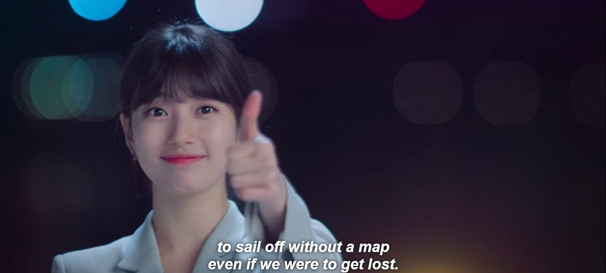

I just started watching the K-Drama Startup. Currently, I just finished episode 3. I actually just watched it to have a glimpse on business or startup's life. How does it look like and all that stuff. Since I have a knack with watching K-drama, I decided to learn it with what I enjoy.
Hopefully I'll get an idea on how to start or at least knowledge about managing startups.
I just liked this one quote from the drama "Sail off without a map"
 "To sail off without a map, even if we get lost."I kind of heard this quote a couple of times but with different variations, words and sentence structures but it's the same message.
I always wanted to wander off, without anything but myself. To a place, unknown. But I'm always afraid or worried of something unseen or unfamiliar. No, I think I can handle the unfamiliarity and unknown. But I guess what truly fear me the most is the known.
I know that once I set sail to the unknown, I shall be judged.
I know that once I set and decided to sail off somewhere, the people that needs my help and assistance might suffer.
I know that once I set my foot to another world, my beloved person, whom I loved the most despite it wasn't shown, might die of worry upon me.
And it is the latter two that I'm afraid the most.
I guess, love is somehow selfish and destructive this way.
To sail off without a map and wander is ridiculous but it is rather better than thinking where to go but not moving at all.